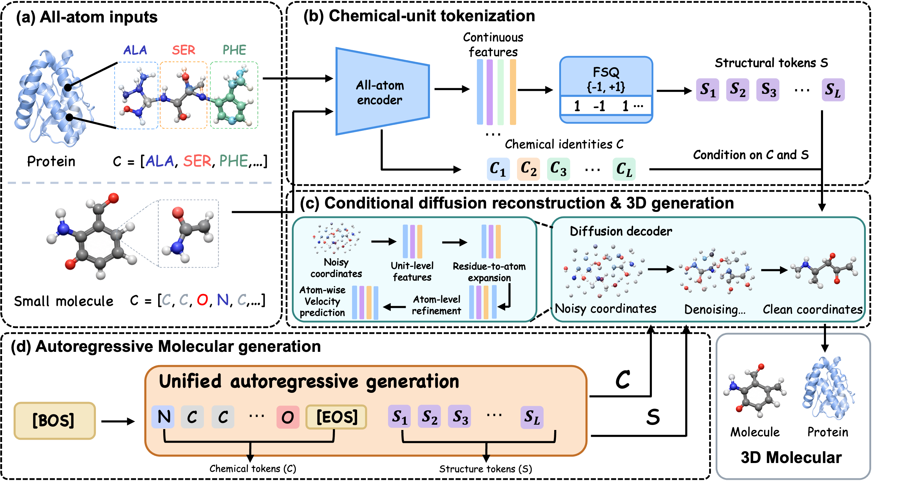
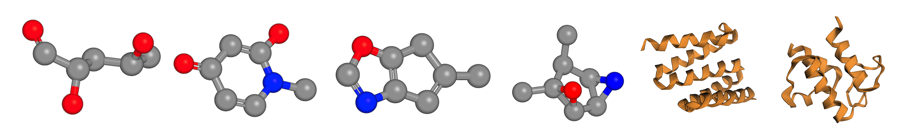

One token per chemical unit
A common tokenization formulation uses one structural token per small-molecule atom or protein residue, with an 8,192-entry codebook.
Visual introduction to all-atom diffusion tokenization.
A common tokenization formulation uses one structural token per small-molecule atom or protein residue, with an 8,192-entry codebook.
A conditional, coarse-to-fine decoder expands residue features into atom-level representations and reconstructs full 3D geometry.
Discrete chemical and structural sequences support small-molecule generation and sequence-conditioned all-atom protein generation.
QM9 reconstruction RMSD
relative to CoordToken
CASP14 all-atom RMSD
with one token per residue
QM9 generation
PoseBusters validity
Reported in Tables 1, 3 and 4 of the paper. Evaluation settings are detailed below.
Discrete structural tokenization provides a promising route to autoregressive 3D molecular generation. Yet, existing tokenizers face a trade-off between compact representation and all-atom reconstruction: atom-level tokens preserve atomic details but produce long sequences, while compact residue-level protein tokens typically omit side-chain geometry. To overcome this limitation, we propose All-atom Diffusion Tokenizer (ADT), which decouples token granularity from reconstruction resolution. ADT uses one structural token per atom for small molecules and one token per protein residue that jointly represents backbone and side-chain geometry. To mitigate geometric distortion introduced by quantization, we leverage the generative capacity of diffusion models to recover fine-grained atomic geometry beyond deterministic decoding from discrete tokens. Extensive experiments across small molecules and proteins demonstrate that ADT achieves strong reconstruction from compact discrete representations while enabling high-quality autoregressive generation of both small molecules and all-atom protein structures. These results establish compact structural tokens as an effective discrete interface for all-atom molecular reconstruction and generation.
From all-atom coordinates to discrete structural tokens, and back to 3D.

A Transformer encodes chemical identities and atomic geometry. Binary finite scalar quantization (FSQ) maps each chemical unit to one discrete structural token.
Conditioned on chemical and structural tokens, the decoder denoises coordinates. Coarse residue features expand into atom-wise features for detailed protein reconstruction.
An autoregressive model samples chemical identities, then structural tokens conditioned on the full chemical sequence. For sequence-conditioned proteins, identities are fixed.
Reconstruction and generation across small molecules and all-atom proteins.

For quantitative results, see Sections 5.2–5.3 and Tables 1–5 of the paper ↗ .
@article{huang2026adt,
title={ADT: All-Atom Diffusion Tokenizer for 3D Molecular Structures},
author={Huang, Xuantuo and Su, Encheng and Wang, Aoran and Tan, Pan and
Xu, Shengyong and Wang, Yizhou and Tang, Chen and Tang, Shixiang and Li, Mingxiao},
journal={arXiv preprint arXiv:2610.23265},
year={2026},
doi={10.48550/arXiv.2610.23265},
url={https://arxiv.org/abs/2610.23265}
}